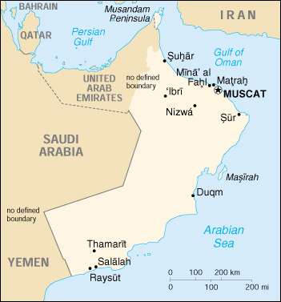

{kind=link}


| Oman |
|
|  | |
| Introduction |
Background: In 1970, QABOOS bin Said Al Said ousted his father and has ruled as sultan ever since. His extensive modernization program has opened the country to the outside world and has preserved a long-standing political and military relationship with Britain. Oman's moderate, independent foreign policy has sought to maintain good relations with all Middle Eastern countries.
| Geography |
Location: Middle East, bordering the Arabian Sea, Gulf of Oman, and Persian Gulf, between Yemen and UAE
Geographic coordinates: 21 00 N, 57 00 E
Map references: Middle East
Area:
total:
212,460 sq km
land:
212,460 sq km
water:
0 sq km
Area - comparative: slightly smaller than Kansas
Land boundaries:
total:
1,374 km
border countries:
Saudi Arabia 676 km, UAE 410 km, Yemen 288 km
Coastline: 2,092 km
Maritime claims:
contiguous zone:
24 nm
exclusive economic zone:
200 nm
territorial sea:
12 nm
Climate: dry desert; hot, humid along coast; hot, dry interior; strong southwest summer monsoon (May to September) in far south
Terrain: vast central desert plain, rugged mountains in north and south
Elevation extremes:
lowest point:
Arabian Sea 0 m
highest point:
Jabal Shams 2,980 m
Natural resources: petroleum, copper, asbestos, some marble, limestone, chromium, gypsum, natural gas
Land use:
arable land:
0%
permanent crops:
0%
permanent pastures:
5%
forests and woodland:
0%
other:
95% (1993 est.)
Irrigated land: 580 sq km (1993 est.)
Natural hazards: summer winds often raise large sandstorms and dust storms in interior; periodic droughts
Environment - current issues: rising soil salinity; beach pollution from oil spills; very limited natural fresh water resources
Environment - international agreements:
party to:
Biodiversity, Climate Change, Desertification, Hazardous Wastes, Law of the Sea, Marine Dumping, Ozone Layer Protection, Ship Pollution, Whaling
signed, but not ratified:
none of the selected agreements
Geography - note: strategic location on Musandam Peninsula adjacent to Strait of Hormuz, a vital transit point for world crude oil
| People |
Population:
2,533,389
note:
includes 527,078 non-nationals (July 2000 est.)
Age structure:
0-14 years:
41% (male 531,137; female 511,051)
15-64 years:
57% (male 875,625; female 555,895)
65 years and over:
2% (male 31,400; female 28,281) (2000 est.)
Population growth rate: 3.46% (2000 est.)
Birth rate: 38.08 births/1,000 population (2000 est.)
Death rate: 4.16 deaths/1,000 population (2000 est.)
Net migration rate: 0.65 migrant(s)/1,000 population (2000 est.)
Sex ratio:
at birth:
1.05 male(s)/female
under 15 years:
1.04 male(s)/female
15-64 years:
1.58 male(s)/female
65 years and over:
1.11 male(s)/female
total population:
1.31 male(s)/female (2000 est.)
Infant mortality rate: 23.28 deaths/1,000 live births (2000 est.)
Life expectancy at birth:
total population:
71.78 years
male:
69.66 years
female:
74 years (2000 est.)
Total fertility rate: 6.08 children born/woman (2000 est.)
Nationality:
noun:
Omani(s)
adjective:
Omani
Ethnic groups: Arab, Baluchi, South Asian (Indian, Pakistani, Sri Lankan, Bangladeshi), African
Religions: Ibadhi Muslim 75%, Sunni Muslim, Shi'a Muslim, Hindu
Languages: Arabic (official), English, Baluchi, Urdu, Indian dialects
Literacy:
definition:
NA
total population:
approaching 80%
male:
NA%
female:
NA%
| Government |
Country name:
conventional long form:
Sultanate of Oman
conventional short form:
Oman
local long form:
Saltanat Uman
local short form:
Uman
Data code: MU
Government type: monarchy
Capital: Muscat
Administrative divisions: 6 regions (mintaqat, singular - mintaqah) and 2 governorates* (muhafazat, singular - muhafazah) Ad Dakhiliyah, Al Batinah, Al Wusta, Ash Sharqiyah, Az Zahirah, Masqat, Musandam*, Zufar*; note - the US Embassy in Oman says that Masqat is a governorate
Independence: 1650 (expulsion of the Portuguese)
National holiday: National Day, 18 November (1940)
Constitution: none; note - on 6 November 1996, Sultan QABOOS issued a royal decree promulgating a new basic law which, among other things, clarifies the royal succession, provides for a prime minister, bars ministers from holding interests in companies doing business with the government, establishes a bicameral legislature, and guarantees basic civil liberties for Omani citizens
Legal system: based on English common law and Islamic law; ultimate appeal to the monarch; has not accepted compulsory ICJ jurisdiction
Suffrage: in Oman's most recent elections in 1997, limited to approximately 50,000 Omanis chosen by the government to vote in elections for the Majlis ash-Shura
Executive branch:
chief of state:
Sultan and Prime Minister QABOOS bin Said Al Said (since 23 July 1970); note - the monarch is both the chief of state and head of government
head of government:
Sultan and Prime Minister QABOOS bin Said Al Said (since 23 July 1970); note - the monarch is both the chief of state and head of government
cabinet:
Cabinet appointed by the monarch
elections:
none; the monarch is hereditary
Legislative branch:
bicameral Majlis Oman consists of an upper chamber or Majlis ad-Dawla (41 seats; members appointed by the monarch; has advisory powers only) and a lower chamber or Majlis ash-Shura (82 seats; members elected by limited suffrage, however, the monarch makes final selections and can negate election results; body has some limited power to propose legislation, but otherwise has only advisory powers)
elections:
last held NA October 1997 (next to be held NA October 2000)
election results:
NA
Judicial branch: Supreme Court, has non-Islamic judges; traditional Islamic judges and a nascent civil court system, administered by region
Political parties and leaders: none
International organization participation: ABEDA, AFESD, AL, AMF, ESCWA, FAO, G-77, GCC, IBRD, ICAO, IDA, IDB, IFAD, IFC, IHO, ILO, IMF, IMO, Inmarsat, Intelsat, Interpol, IOC, ISO (correspondent), ITU, NAM, OIC, OPCW, UN, UNCTAD, UNESCO, UNIDO, UPU, WFTU, WHO, WIPO, WMO, WTrO (applicant)
Diplomatic representation in the US:
chief of mission:
Ambassador Abdallah bin Muhammad bin Aqil al-DHAHAB
chancery:
2535 Belmont Road, NW, Washington, DC 20008
telephone:
[1] (202) 387-1980 through 1981, 1988
FAX:
[1] (202) 745-4933
Diplomatic representation from the US:
chief of mission:
Ambassador John B. CRAIG
embassy:
Jameat A'Duwal Al Arabiya Street, Al Khuwair area, Muscat
mailing address:
international: P. O. Box 202, Code No. 115, Medinat Qaboos, Muscat
telephone:
[968] 698989
FAX:
[968] 699779
Flag description: three horizontal bands of white, red, and green of equal width with a broad, vertical, red band on the hoist side; the national emblem (a khanjar dagger in its sheath superimposed on two crossed swords in scabbards) in white is centered at the top of the vertical band
| Economy |
Economy - overview: Oman's economic performance improved significantly in 1999 due largely to the mid-year upturn in oil prices. The government is moving ahead with privatization of its utilities, the development of a body of commercial law to facilitate foreign investment, and increased budgetary outlays. Oman continues to liberalize its markets in an effort to accede to the World Trade Organization (WTrO) and is likely to gain membership in 2000.
GDP: purchasing power parity - $19.6 billion (1999 est.)
GDP - real growth rate: 4% (1999 est.)
GDP - per capita: purchasing power parity - $8,000 (1999 est.)
GDP - composition by sector:
agriculture:
3%
industry:
40%
services:
57% (1999 est.)
Population below poverty line: NA%
Household income or consumption by percentage share:
lowest 10%:
NA%
highest 10%:
NA%
Inflation rate (consumer prices): -0.07% (1999 est.)
Labor force: 850,000 (1997 est.)
Labor force - by occupation: agriculture NA%, industry NA%, services NA%
Unemployment rate: NA%
Budget:
revenues:
$3.9 billion
expenditures:
$5.6 billion, including capital expenditures of $NA (1999 est.)
Industries: crude oil production and refining, natural gas production, construction, cement, copper
Industrial production growth rate: 2% (1997 est.)
Electricity - production: 7.36 billion kWh (1998)
Electricity - production by source:
fossil fuel:
100%
hydro:
0%
nuclear:
0%
other:
0% (1998)
Electricity - consumption: 6.845 billion kWh (1998)
Electricity - exports: 0 kWh (1998)
Electricity - imports: 0 kWh (1998)
Agriculture - products: dates, limes, bananas, alfalfa, vegetables; camels, cattle; fish
Exports: $7.2 billion (f.o.b., 1999 est.)
Exports - commodities: petroleum, reexports, fish, metals, textiles
Exports - partners: Japan 21%, China 16%, Thailand 16%, South Korea 12%, US 3% (1997)
Imports: $5.4 billion (f.o.b., 1999 est.)
Imports - commodities: machinery and transport equipment, manufactured goods, food, livestock, lubricants
Imports - partners: UAE 23% (largely reexports), Japan 16%, UK 13%, US 7.5%, Germany 5% (1997)
Debt - external: $4.8 billion (1998 est.)
Economic aid - recipient: $76.4 million (1995)
Currency: 1 Omani rial (RO) = 1,000 baiza
Exchange rates: Omani rials (RO) per US$1 - 0.3845 (fixed rate since 1986)
Fiscal year: calendar year
| Communications |
Telephones - main lines in use: 300,000 (1999)
Telephones - mobile cellular: 120,000 (1999)
Telephone system:
modern system consisting of open wire, microwave, and radiotelephone communication stations; limited coaxial cable
domestic:
open wire, microwave, radiotelephone communications, and a domestic satellite system with 8 earth stations
international:
satellite earth stations - 2 Intelsat (Indian Ocean) and 1 Arabsat
Radio broadcast stations: AM 3, FM 9, shortwave 2 (1999)
Radios: 1.4 million (1997)
Television broadcast stations: 13 (plus 25 low-power repeaters) (1999)
Televisions: 1.6 million (1997)
Internet Service Providers (ISPs): 1 (1999)
| Transportation |
Railways: 0 km
Highways:
total:
32,800 km
paved:
9,840 km (including 550 km of expressways)
unpaved:
22,960 km (1996 est.)
Pipelines: crude oil 1,300 km; natural gas 1,030 km
Ports and harbors: Matrah, Mina' al Fahl, Mina' Raysut
Merchant marine:
total:
3 ships (1,000 GRT or over) totaling 16,306 GRT/8,210 DWT
ships by type:
cargo 1, passenger 1, passenger/cargo 1 (1999 est.)
Airports: 142 (1999 est.)
Airports - with paved runways:
total:
6
over 3,047 m:
4
2,438 to 3,047 m:
1
914 to 1,523 m:
1 (1999 est.)
Airports - with unpaved runways:
total:
136
over 3,047 m:
2
2,438 to 3,047 m:
6
1,524 to 2,437 m:
56
914 to 1,523 m:
37
under 914 m:
35 (1999 est.)
Heliports: 1 (1999 est.)
| Military |
Military branches: Army, Navy, Air Force, paramilitary (includes Royal Oman Police)
Military manpower - military age: 14 years of age
Military manpower - availability:
males age 15-49:
762,832 (2000 est.)
Military manpower - fit for military service:
males age 15-49:
425,356 (2000 est.)
Military manpower - reaching military age annually:
males:
25,527 (2000 est.)
Military expenditures - dollar figure: $1.592 billion (FY99)
Military expenditures - percent of GDP: 11.1% (FY99)
| Transnational Issues |
Disputes - international: northern boundary with the UAE has not been bilaterally defined; northern section in the Musandam Peninsula is an administrative boundary